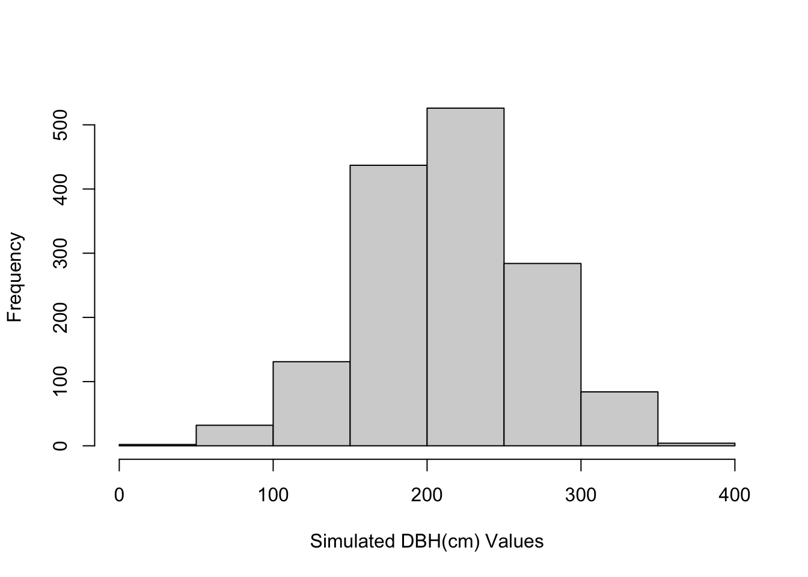
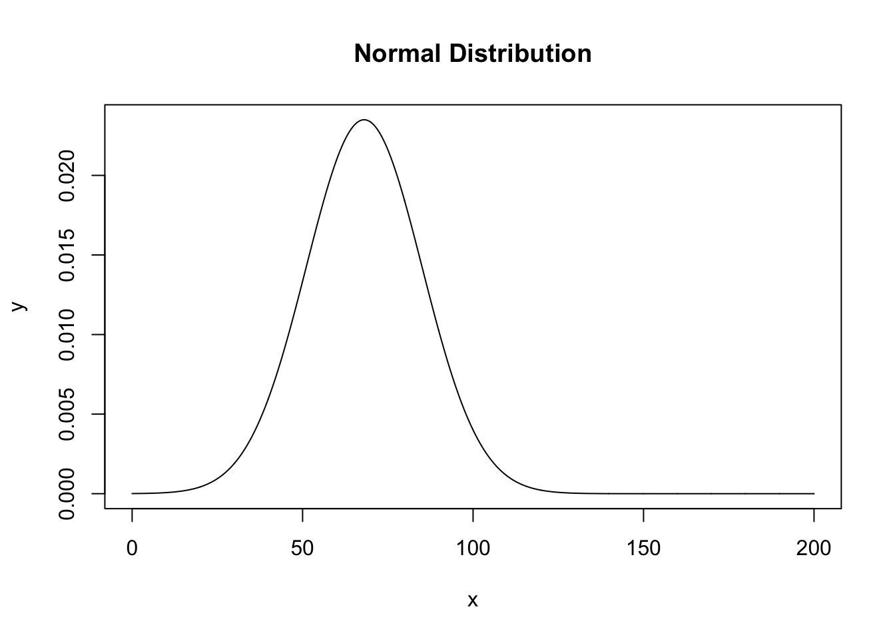

Week 2 Probability Distributions - Normal
This week we review the Normal distribution as a way into thinking about probability and comparing observations to a distribution.
2.1 What we cover this week
- The Normal distribution
- Z-scores
- Calculating probability from z-scores
- Understanding how and why the Normal distributions is important
- Limitations and situations where the use of the Normal distribution is inappropriate
2.2 Readings
Key sections in readings:
- Introduction
- History
- Areas of Normal Distribution
- Varieties of Normal Distribution
- Standard Normal
2.3 Lab
This lab is due on the Dropbox on MyLearningSpace on Friday January 29th
Our lab this week will examine trees in a coastal forest in British Columbia. In particular we have a small dataset of tree circumfrences which we want to analyze. These data were collected recently by me and my trusty field assistant, which you can review in its entirety below. You can see how time consuming data collection can be!
While tree circumference is easy to measure and tells us something about tree size and age, it is more customary to work with tree diameters. A typical measure used to measure tree is diameter-at-breast-height (DBH) which is measured 4.5 feet from the ground using a DBH tape. Since we did not have one of these specialized DBH tapes, we can get started by converting our measures of circumference to diameter using the relationship between these two quantities which is \(diameter=Circumference/\pi\) recalling that \(\pi\) is ratio of a circle’s circumference to its diameter which we can use 3.14159 as a value.
So assuming we have a circumference of 214 cm, the diameter would be \(214/3.14159=68.11837\) which in our dataset our expressed in units of centimeters.
2.3.1 Tree Circumference Data
The data we collected in the video were as follows:
- 272
- 272
- 236
- 154
- 256
- 156
- 143
- 269
- 205
- 175
In order to bring the data into R, we need to assign these numbers to a data frame which is like a table, or to a vector which is just a bunch of numbers stored in order. A data frame can be made up of multiple vectors (as individual columns in a table). We will make a vector, since we do not have anything other than tree circumference to store. If we had collected information on tree species, condition, site characteristics, etc. we would want to store the data as a table, so we would create a data frame.
x = c(272,272,236,154,256,156,143,269,205,175)What is happening in the command line above? First of all we are making an assignment using the \(=\) operator. This means we are assigning whatever is on the right side of the \(=\) to what is on the left side. In this case we are creating a vector of numbers representing our tree dataset to a variable called \(x\). The function c is being used which all it does is take some values and create a vector from them.
Before going further, as we noted above we want to convert these measures of circumference to diameters. R has a special number for \(\pi\) which we can use by just typing pi in the console. Try it:
pi## [1] 3.141593So if we wanted to divide all of our values by \(\pi\) we could just type the following in the console:
x/pi## [1] 86.58029 86.58029 75.12113 49.01972 81.48733 49.65634 45.51831 85.62536
## [9] 65.25353 55.70423which is good, but this just displays them to the screen. In order to do something with these we want to store them in a new variable. Note that we can use any name we want for variables. We will create a new one called dbh:
dbh = x/piNow we have a new vector which has our data properly represented in values of dbh which we measured in the field. We can use this vector in subsequent work below.
2.3.2 Recalling measures of central tendency and dispersion
Say we want to calcuate some measures of central tendency to give us an idea what we might expect to find for a randomly selected tree in this forest. We could calcualte the mean, median, and mode. The mean and median are useful, but the mode doesn’t make much sense in this context, so we will focus on the mean and median. Recall the difference - the mean just the sum of values divided by the number of observations - which is expressed in math terms as
\(\bar{x}=\frac{\sum\limits_{i = 1}^n{x_i}}{n}\) which if this looks foreign to you not to worry. This is saying the mean, denoted by \(\bar{x}\) is equal to the sum of the observation values (\(x_i\) in the above) divided by \(n\) which is what we used to denote the number of observations or the sample size. The sample size is a super important quantity in everything we’ll do. It is always simply a count of the number of measurements, but it can tell us a lot about how much certainty we should have in our data and statistics. For example, in the above, we only measured 10 trees, out of thousands in that forest. We may not be able totally rely on measures calculated from such a small sample (especially since the selection of trees was far from random!).
So we know at this point we have the data we want stored in dbh and we know what we want to do with it - calculate the mean. We can use R just like a calculator with a few tricks thrown in to save us some time. One is the sum function. We can for example, sum up the dbh values:
sum(dbh)## [1] 680.5465which gets us most of the way there, if we divide by our sample size, we will get the mean. We can do this in one step:
sum(dbh/10)## [1] 68.05465which tells us that 68.0546537 is the mean dbh in the sample of trees. We can also use the built in mean function:
mean(dbh)## [1] 68.05465We can also get the median with a simple function:
median(dbh)## [1] 70.18733If we wanted to compute the standard deviation, which in math terms looks like \(\sigma = \sqrt {\frac{\sum\limits_{i = 1}^n {\left( {x_i - \bar x} \right)^2 }}{n}}\) which is a bit more complicated than the mean, but if we work from the inside out, we are summing the squared deviations \(\left( {x_i - \bar x} \right)^2\) from the mean, dividing that sum by the sample size \(n\) and then square rooting the whole thing to get us out of squared terms. We can use the function sd in R to calculate the standard deviation:
sd(dbh)## [1] 16.97905which we could also calculate ‘manually’ like:
dbh - mean(dbh)## [1] 18.525635 18.525635 7.066479 -19.034931 13.432677 -18.398311
## [7] -22.536340 17.570706 -2.801127 -12.350424(dbh - mean(dbh))^2## [1] 343.199166 343.199166 49.935132 362.328606 180.436817 338.497863
## [7] 507.886618 308.729699 7.846312 152.532963sum((dbh - mean(dbh))^2)## [1] 2594.592sum((dbh - mean(dbh))^2)/10## [1] 259.4592sqrt(sum((dbh - mean(dbh))^2)/10)## [1] 16.10774You may be asking yourself (hopefully) - hey our manual method doesn’t match the output we got from the sd function? The reason is because there are actually two ways to calculate standard deviation - one way for sample data, and another way for population data. The good news is that the difference is very small - basically when we use sample data we have to reduce our sample size by one in order to get what is called an unbiased estimate. We will go into more detail about this later, but for now, recognize that the sd function defaults to the sample standard deviation. Since we are working with sample data, we should use the sample formula, and adjust our manual method:
sqrt(sum((dbh - mean(dbh))^2)/9)## [1] 16.97905now they match!
sd(dbh)## [1] 16.979052.3.3 The Normal Distribution
Lets pretend that Clementine and I spent weeks out in that forest dutifully sampling trees so that we had a sample size of 1500! I can’t see that having gone well. But luckily we can create a dataset using simulation pretty easily, and we will based it on our actual sample mean and standard deviation. We will use a function called rnorm which basically will generate random samples from a given Normal distribution, we just have to supply the mean, standard deviation, and sample size.
sim_dbh <- rnorm(n=1500, mean=mean(x), sd=sd(x))We don’t want to look at all the values on the screen because there are too many. We can look at the first few, the last few, and then count the number of observations as follows:
head(sim_dbh)## [1] 193.2603 265.5825 315.8979 216.8749 215.1430 255.1160tail(sim_dbh)## [1] 200.8646 235.3436 243.4558 118.5888 254.8605 133.7334length(sim_dbh)## [1] 1500because these are randomly simulated values, yours may differ a bit from what you see here, but there should be 1500 values.
We can look at the distribution of values by plotting the histogram:
hist(sim_dbh, xlab = "Simulated DBH(cm) Values", main="")
We can also create a line showing the theoretical distribution that would be the population standard deviation:
x = seq(0,200,.1)
y = dnorm(x, mean=mean(dbh), sd=sd(dbh))
plot(x,y, type="l", main="Normal Distribution")
The key point here is that from this smoothly varying distribution, we can calculate probabilities. Say we sampled a tree with a dbh of 100, we can ask the question - what is the probability of finding a tree with a dbh of 100 or greater from this distribution, that is akin to finding the area under the curve for everything to the right of the 100 value on the x-axis. We will use a special probability function in R to get this, it is called pnorm
pnorm(q=100, mean = mean(dbh), sd=sd(dbh), lower.tail = FALSE)## [1] 0.02995489which tells us that the probability of sampling a tree with a dbh value of 100 or greater is 0.03 - so pretty unlikely.
2.3.4 Using z-scores instead of raw data to more easily find probabilities from a normal distribution
You may have covered z-scores in GESC-254, but as a refresher, it is simply a score we can calculate for every observation which standardizes the data to a standard normal distribution. This means it eliminates the units of the data (i.e., we’re no longer in the centimeters we measured) - but it makes scores comparable across datasets and easier to quickly interpret.
The z-score formula is \(z_i = \frac{x_i - \bar{x}}{\sigma}\) which is just the observation, minus the mean, divided by the standard deviation. We’ll go back to our smaller dataset to illustrate:
(dbh - mean(dbh)) / sd(dbh)## [1] 1.0910881 1.0910881 0.4161882 -1.1210836 0.7911326 -1.0835892
## [7] -1.3273030 1.0348464 -0.1649755 -0.7273920z-scores have the properties that values less than zero are for observations below the mean, values greater than zero are for observations above the mean, and values of zero correspond to the mean (which are rare). Moving back to our hypothetical tree with a dbh of 100, lets calculate its z-score:
(100 - mean(dbh)) / sd(dbh)## [1] 1.881457which gives us a z-score of 1.881457 If we checked the probability value associated with this z-score we would see that it matched the one we got above, we just no longer have to specify the mean and sd because this is referenced to a standard normal distribution
pnorm(1.881457, lower.tail=FALSE)## [1] 0.029954892.3.5 Assignment
Calculate the probability of finding a tree with a dbh of 90 or greater based on the sample mean and sample standard deviation above. What is the z-score associated with a dbh of 90 cm? Include commands used to generate the answer. (out of 3)
Repeat question 1 for a distribution with a mean of 75 and a standard deviation of 30. Include a sentence intepreting what the difference in the two answers means. (out of 4)
Create a new dataset with a mean and standard deviation of your choosing and a sample size of 100. Plot the histogram being sure to label axes appropriately. (out of 3)
Do you think the sample of trees we collected was representative of the wider forest? What would be some potential issues with inferring characteristics of the forest from this dataset? (out of 5)
What other types of data could we have collected? What would be of greatest value if we were aiming to identify the conservation value of the forest to a community group? (out of 5)